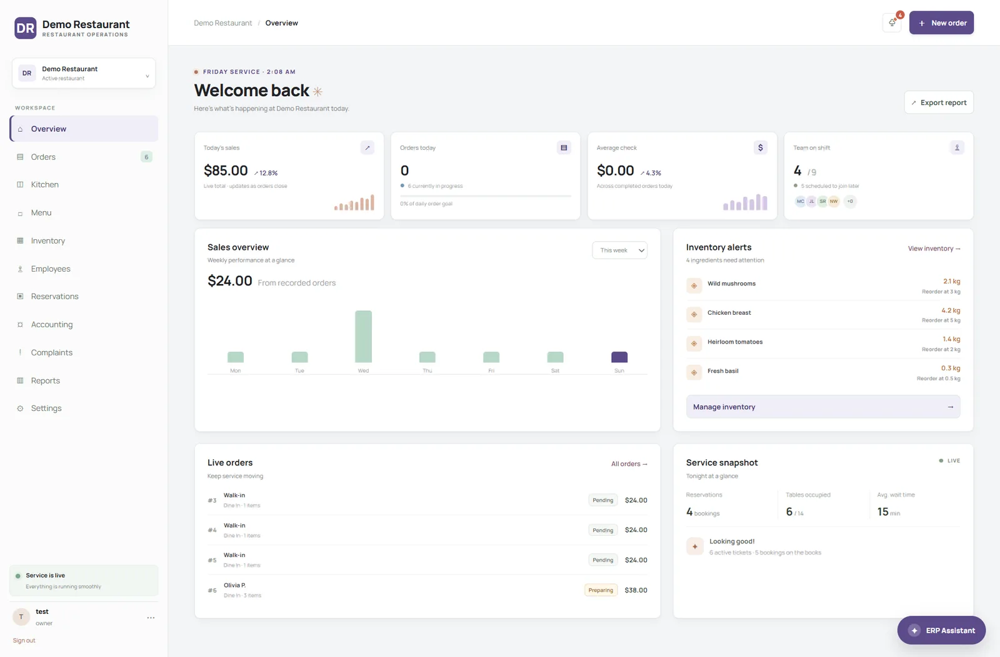
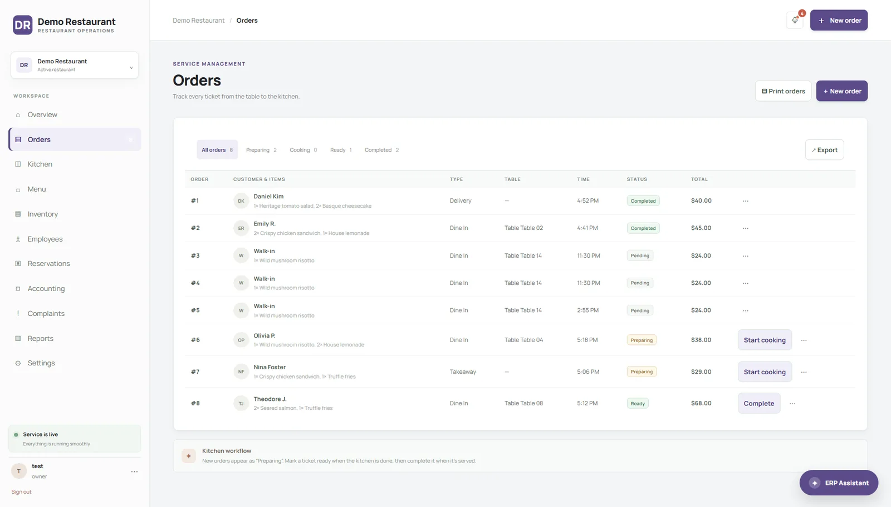
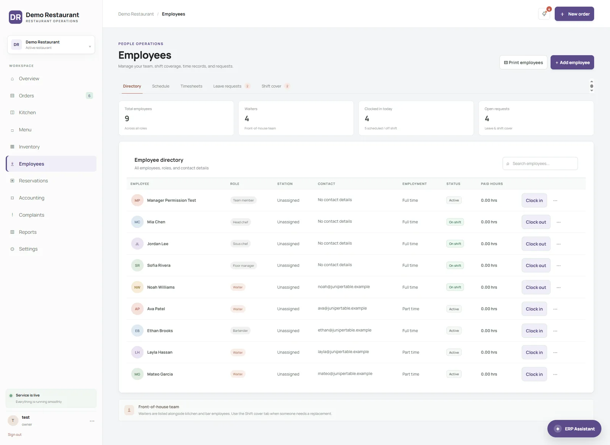
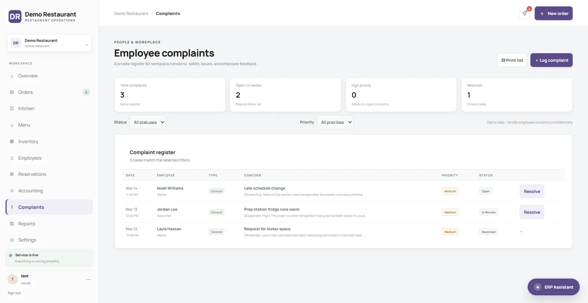
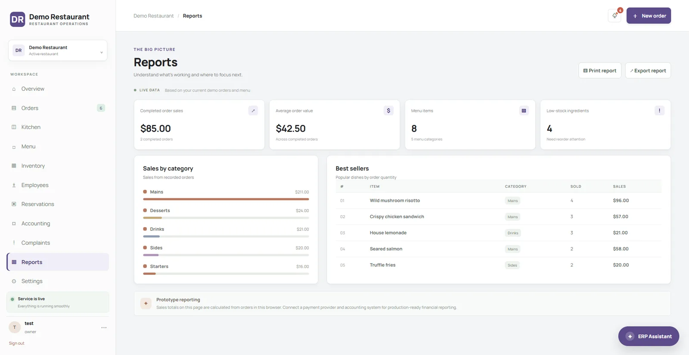
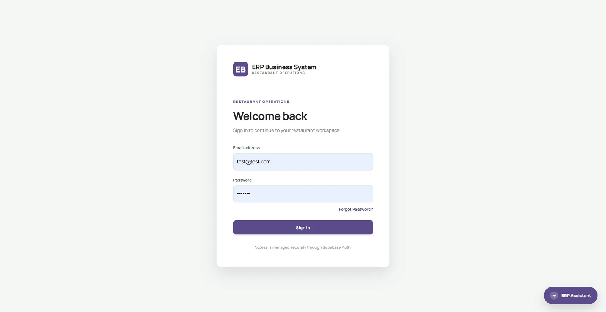

Case study / Personal project / 2026
Restaurant ERP System
One app for the daily running of a restaurant: orders, menu, inventory, reservations, staff and expenses. It is built so several restaurants can share the same app without ever seeing each other's data.
Sign in to the live demo with test@test.com and test123. It opens the Demo Restaurant as an owner. The data is sample data, and other visitors share the same login, so records may have changed since you last looked.
Good places to start: create an order, then press the ERP Assistant button at the bottom right and ask which inventory items are running low.

The problem
Restaurants run on connected information
A restaurant needs to take orders, keep the menu current, manage tables and bookings, watch stock, schedule staff and track money. These jobs depend on each other. An order is only useful if the item is available, and low stock needs someone's attention before the dish runs out.
When each job lives in a different tool or spreadsheet, owners spend time looking for answers that should be one click away. I wanted to see what it takes to put all of it in one place, with each person seeing only what their role needs.
What it does
Six areas in one workspace
Orders & kitchen
Create dine-in, takeaway and delivery orders against a table, then move each ticket through preparing, cooking, ready and completed.
Menu & inventory
Manage menu categories and items with price and availability. Track stock, reorder thresholds, suppliers and stock movements, and link menu items to the ingredients they use.
Tables & reservations
Keep a list of dining tables and attach bookings and orders to them.
Team & shifts
Employee records, shift schedule, clock in and out, timesheets, leave requests and shift cover requests.
Accounting & complaints
Expenses, payments and wage records, plus a private register where staff concerns can be logged and resolved.
Dashboard & reports
Summaries calculated from the restaurant's own order records, with best sellers and sales by category.




Multi-tenant design
One app, many restaurants, no shared data
Instead of building a separate app for each restaurant, the system runs one app on one database. Every restaurant has a unique ID, and every record, such as an order, an employee or an inventory item, belongs to one restaurant.
Filtering in the frontend is not enough to protect that. Anyone can change a request in their browser. So the separation is enforced in the database with Row Level Security (RLS), and the app links each signed-in user to their restaurants through membership records.
Access control
Who can see what
Sign-in is handled by Supabase Auth. After login the app loads the user's active restaurant membership and role, then shows only the navigation that role needs. There are four levels:
- Platform admin manages the restaurants on the platform. This is a separate record and not a normal restaurant role.
- Owner has full access to their restaurant's data and settings.
- Manager runs day-to-day work: employees, orders, reservations and menu.
- Staff has a shared restaurant login with limited access to the screens used during service.
Hiding a button is only the first layer. The same rules are repeated in the database policies, so a staff user who tries to call the data directly still gets refused.
AI assistant
Ask questions, with limits
I wanted to see how an AI assistant could work inside a business app without becoming a risk. Users can ask in plain language, for example how many employees are registered, what is on the menu, which items are unavailable, what today's orders are, what stock is low, what the monthly expenses are, or what reservations exist.
The assistant can also create menu items, reservations and orders, but only after showing the action and getting a confirmation from the user.
- It has no free access to the database and cannot run arbitrary SQL. It can only call the eleven operations I defined.
- Each operation runs with the signed-in user's permissions, so row level security applies to the assistant too.
- The Gemini API key is kept as a server-side secret and never reaches the browser.
Stack
What I used and why
| Part | Why I chose it |
|---|---|
| HTML, CSS, JavaScript | No framework on purpose. I wanted to understand how the interface, data loading and Supabase requests fit together before adding a layer on top. |
| Supabase | Database, login and server functions in one service, so I could spend my time on the product and the data design instead of building a backend from scratch. |
| PostgreSQL | The data is highly connected: an order has items, a reservation has a table, an employee has shifts and leave. A relational database with constraints suits that. |
| Row Level Security | Keeps each restaurant's records private at the database, not just in the interface. |
| Edge Functions | A server-side place for the AI integration, so secrets and permission checks stay off the browser. |
| Gemini API | Understands the question and decides which defined tool to call. Function calling connects the model to real app actions. |
| Vercel | Simple frontend hosting with deploys from the repository. The backend stays on Supabase. |
Process
How I built it
- Mapped the modulesListed what a restaurant does each day and split it into modules: orders, menu, reservations, inventory, employees and finance.
- Designed the interfaceBuilt the layout, navigation, dashboard, forms, tables and modals, aiming to keep a large app easy to move around.
- Designed the databaseCreated separate related tables, for example orders and order items, or employees, shifts and time entries, connected by IDs.
- Connected the app to real dataSeveral screens started on local demo data. I rewrote the loading and saving to use Supabase and mapped database records to what the existing screens expected.
- Added login, roles and RLSLinked users to restaurant memberships and wrote the policies that protect each restaurant's data.
- Seeded demo dataWrote a script that fills the Demo Restaurant with realistic records. It uses fixed IDs, so running it again does not create duplicates.
- Added the AI assistant, then tested and deployedBuilt the Edge Function and its tools, tested the roles and the separation between restaurants, and deployed the frontend on Vercel.
Hard parts
What took the most work
Separating restaurants
Adding a restaurant ID to the interface was the easy part. Making the database refuse access across restaurants meant memberships and policies, and testing them with different users.
Roles in two places
Permissions had to match in the navigation and in the database policies. If they drift apart, either users see broken screens or the data is exposed.
Moving screens to real data
Existing pages expected one shape of data and the database stored another. I wrote a mapping layer so I could keep the interface behaviour while changing where the data came from.
Giving the AI limited power
Calling an API is simple. Deciding which tools to expose, checking the user's access for each one, and adding a confirmation step before any write took design work.
Limits
What this is, and what it isn't yet
This is a working showcase and a learning project. It demonstrates the structure, the database design, multi-restaurant access, role permissions and the AI features.
Not every module has full create, edit and delete workflows yet. Some are complete, some are partial, and some mainly display data. The reports page works from order records and labels itself as prototype reporting, with no payment provider or accounting system connected. The assistant supports a fixed set of operations and cannot do everything the app can.
Before real restaurants used it, it would need more testing, a security review and operational work such as backups and monitoring.
Takeaways
What I learned
Building this showed me how much of a real product sits under the screens: the shape of the data, who is allowed to see it, and how the pieces connect. I came away with practical experience in relational design, authentication, row level security, multi-tenant data access, server-side functions and connecting an AI model to application actions in a controlled way.
Next steps would be finishing the partial workflows, adding automated tests and doing a proper security review.
